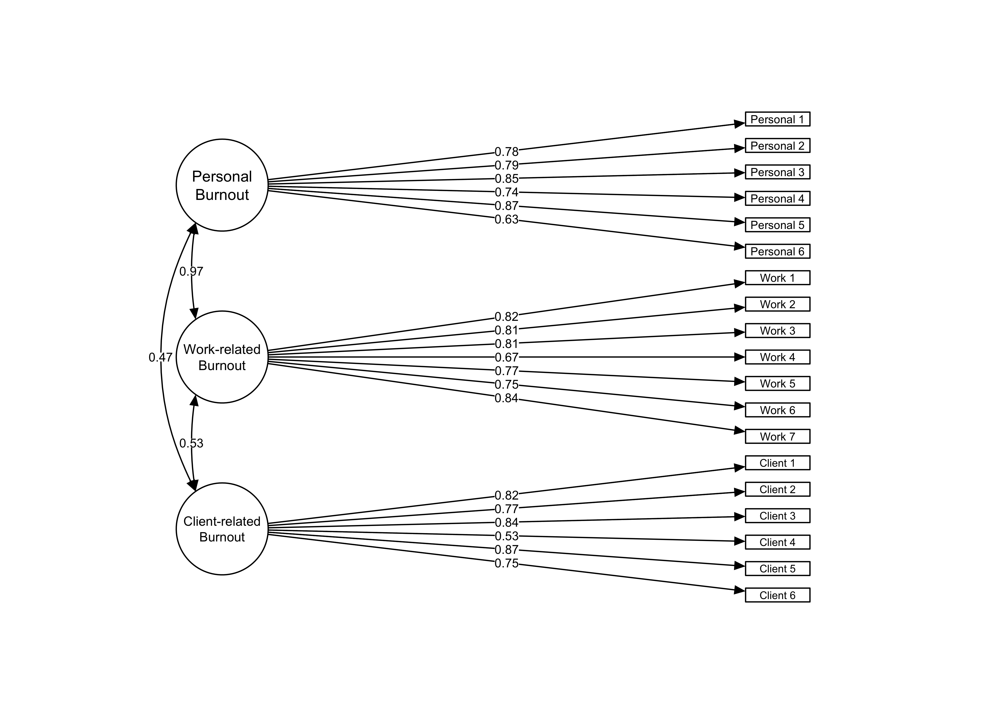

Use of the Copenhagen Burnout Inventory Among US Academic Librarians
Examination of Construct Validity and the Burnout General Factor
The Copenhagen Burnout Inventory (CBI) is a non-commercial, free, and easy-to-administer tool for measuring burnout across three dimensions: personal, work-related, and client-related. The CBI presents a cost-effective alternative to the MBI which may be particularly enticing for academic library leaders and researchers. This study assesses the psychometric properties, including construct validity and scale reliability, of the CBI among academic librarians in the United Studies using a probability sample stratified by institutional Carnegie classifications and geographic region.
Burnout is a pervasive problem in libraries; however, little empirical evidence exists to demonstrate burnout’s extent and to assist in identifying evidence-based solutions. As far as quantitative analysis of burnout is concerned, the Maslach Burnout Inventory (MBI) has been a primary tool for measuring burnout among human services workers. However, the tool is proprietary and can be cost-prohibitive for large samples or small/non-existent budgets. As we consider the measurement of burnout as a field, open tools are better aligned with the values of librarianship, and free tools are better aligned with the resources available for conducting research or internal assessments. The Copenhagen Burnout Inventory (CBI) is a non-commercial, free, and easy-to-administer tool for measuring burnout across three dimensions: personal, work-related, and client-related. The CBI presents a cost-effective alternative to the MBI which may be particularly enticing for academic library leaders and researchers. This study assesses the psychometric properties, including construct validity and scale reliability, of the CBI among academic librarians in the United Studies using a probability sample stratified by institutional Carnegie classifications and geographic region.
Literature Review
Comparison of tools for measuring burnout: Maslach Burnout Inventory (MBI), Oldenburg Burnout Inventory (OLBI), the Burnout Measure (BM) Single-item Burnout Measure, Copenhagen Burnout Inventory
Maslach Burnout Inventory
Nardine (2019) and Matteson & Miller (2013) previously used the Maslach Burnout Invetory among samples of academic librarians from ARL institutions and of librarians across different types of institutions respectively.
Oldenburg Burnout Inventory
Burnout Measure
Single-item Burnout Measure
Copenhagen Burnout Inventory
Wood et al. (2020) and Johnson (2023) have previously used the Copenhagen Burnout Inventory among samples of academic librarians.
Methods
Sample & Recruitment
Data Analysis
Analyses were conducted using the R Statistical language (version 4.3.0; R Core Team, 2023) on macOS 14.0, using the packages semPlot (version 1.1.6; Epskamp S, 2022), easystats (version 0.7.0; Lüdecke D et al., 2022), lavaan (version 0.6.16; Rosseel Y, 2012), dplyr (version 1.1.4; Wickham H et al., 2023), readr (version 2.1.4; Wickham H et al., 2023), tidyr (version 1.3.0; Wickham H et al., 2023), and psych (version 2.3.9; William Revelle, 2023). The article was authored using Quarto in RStudio.
Ethical Considerations
The Institutional Review Board at the University of South Florida reviewed the study for human ethics approval and deemed it to be exempt with minimal risk. At the beginning of the web survey, participants reviewed an informed consent document and identified their consent by selecting “I freely give my consent to take part in this study.”
Results
The Cronbachs alphas testing the internal consistency of the three subscales of the CBI are 0.896 for personal, 0.912 for work-related, and 0.889 for client-related.
Skewness and Kurtosis for all variables are within -3 to 3 for the former and -10 to 10 for the latter as suggested for cutoffs for univariate normality to use data for confirmatory factor analysis (cite Harrington). Descriptive statistics, including skewness and kurtosis, for each item in the CBI are included in Table 1. Given that the likert item data for each question are ordinal, the data for each individual variable within the subscales are not normal. The subscales themselves approximate normality. Questions 14 and 16 (both in the client-related burnout subscale) had z-scores that exceeded an absolute value of 3; however, these data were still included in the model since this may be a conservative cutoff, and because the client-related burnout scale is a self-report measure, responses on this scale for librarians might be lower because of social desirability bias and the relationship between librarianship and vocational awe. Additionally, the range of z scores for item 14 was -1.197 to 3.164 and for item 16 was -1.278 to 3.365
The sample size for the CFA analysis was 372 complete responses after removing any responses with missing data. In a Monte Carlo simulation study, Muthen and Muthen found that a sample size of 315 was needed with non-normal data and some missing data. The sample size falls short of this threshold; however, the data meet some of the thresholds for noramlity defined by skewness, kurtosis, and outliers above. Additionally, other rules of thumb for sample size are lower.
Estimator ML, optimization method NLMINB.
The CFA analysis indicated that the chi-square statistic for the model was significant (x2(149) = 500.871, p < 0.001) leading to reject the null hypothesis of good fit. However, this was ignored as it may be simply for having a “large” sample size. The goodness of fit indices for the overall model indicated mostly satisfactory levels [CFI 0.914, RMSEA 0.089 [90% CI 0.081, 0.098], SRMR 0.062] demonstrating generally acceptable fit of the three-factor model. Using dynamic model index cutoff values calculated from Wolf & McNeish (2022) Dynamic Model Fit (dynamic) package in R, the fit is poorer (level 1 cutoffs: SRMR 0.058, RMSEA 0.05, CFI 0.973, magnitude 0.509; level 2 cutoffs: SRMR 0.06, RMSEA 0.052, CFI 0.974). The path model with standardized factor loadings and covariances of the latent variables is included in Figure 1. The standardized factor loadings with their 95% confidence intervals are outlined in ?@tbl-cfa.
Item
Factor 1
Factor 2
Factor 3
Factor loadings could go here… {#tbl-cfa}
x2 to df ratio also suggests poor fit.
The fourth item in the client-related burnout scale (item 17 in the CBI overall) had a lower corrected item-total correlation, would result in a slightly higher Cronbach’s alpha for the client-related subscale if dropped (0.904 as opposed to 0.889), and had the lowest standardized factor loading in the CFA model. However, removal of the item doesn’t bring the RMSEA to satisfactory thresholds (change from 0.0944 to 0.0893; threshold is 0.5 or 0.8 depending on recommendations).
Removing the items with standard factor loadings below 0.7 (CBI 6, 10, and 17), resulted in a model with all standardized factor loadings above 0.7; however, based on approximate indices of fit, the model fit was generally poorer (x2(101) = 419.268, p < 0.001, CFI 0.913, RMSEA 0.103, SRMR 0.062).
Personal and work-related burnout appear highly correlated within the model, which makes sense given that personal burnout is meant to be a more general representation of burnout. Using only the more specific and more clearly differentiated subscales of work-related and client-related burnout yields a better fitting model. In that model, the chi-square statistic is still significant (x2(64) = 162.608, p < 0.001, CFI 0.959, SRMR 0.056, RMSEA 0.072). RMSEA still doesn’t meet standardized cutoffs. However, the dynamic cutoffs generated were SRMR 0.06, RMSEA 0.074 and CFI 0.96 (the package doesn’t return a value beyond hundredths, and the CFI rounded to hundredths is 0.096), which are met by the model. The magnitude is still high at 0.509, suggesting misidentification.
Three factor model versus three single factor models.
Additionally, the CBI is developed so that all three subscales can be used individually.
“The data generation for a Level-1 misspecification includes an additional .30 residual correlation between the items with the two lowest standardized loadings (Item 5 and Item 6). The Level-2 misspecification adds another .30 residual correlation to the items with the next two lowest standardized loadings (Item 2 and Item 4). The Level-3 misspecification then adds a third .30 residual correlation to the items with the next two lowest standardized loadings (Item 1 and Item 7)” (McNeish & Wolf, p. 59)
Subscale
x2
df
SRMR
RMSEA
CFI
Personal
25.202 (p = 0.003)
9
0.026
level 1 - 0.023
level 2 - 0.029
level 3 - 0.035
0.078
level 1 - 0.056
level 2 - 0.09
level 3 - 0.126
0.984
level 1 - 0.992
level 2 - 0.98
level 3 - 0.964
Work-related
57.114 (p < 0.001)
14
0.036
level 1 (90/10) - 0.023
level 2 - 0.027
level 3 - 0.032
0.102
level 1 (90/10) - 0.048
level 2 - 0.076
level 3 - 0.104
0.966
level 1 (90/10) - 0.992
level 2 - 0.981
level 3 - 0.968
Client-related
22.935 (p = 0.006)
9
0.024
level 1 - 0.027
level 2 - 0.032
level 3 - 0.036
0.072
level 1 - 0.061
level 2 - 0.092
level 3 - 0.126
0.986
level 1 - 0.99
level 2 - 0.979
level 3 - 0.965
While the model fit may not be ideal, the model is generally satisfactory with more generous approximations of fit. Future research studies may consider alternate models or recruit larger samples. The sample size of 296 meets some rules of thumb; however, another rule of thumb is for the same size to be equal to 20 times the number of parameters, which is this case is 35, meaning that a sample size of at least 700 would be more appropriate. For the model with only the two specific subscales, the sample size should be at least 540 following this rule of thumb.
\(\alpha\)
Table 1: Descriptive statistics for each question in the CBI. Note: For all questions, N = 372, Min = 0, Max = 100, and no responses are missing.
Variable
Mean
SD
Median
Skewness
Kurtosis
\(\alpha\) /\(\alpha\) if deleted
Corrected Item-Total Correlation
Personal Burnout
50.76
20.40
50.00
0.05
-0.23
0.896
Personal 1 (CBI 1)
65.52
22.91
75
-0.213
-0.472
0.875
0.800
Personal 2 (CBI 2)
52.49
24.40
50
-0.131
-0.216
0.871
0.810
Personal 3 (CBI 3)
54.84
24.90
50
-0.083
-0.357
0.869
0.824
Personal 4 (CBI 4)
33.74
28.33
25
0.489
-0.567
0.894
0.674
Personal 5 (CBI 5)
60.22
23.57
50
-0.277
-0.116
0.864
0.866
Personal 6 (CBI 6)
37.77
26.31
25
0.257
-0.619
0.895
0.649
Work-related Burnout
47.95
21.67
48.21
0.10
-0.49
0.916
Work-related 1 (CBI 7)
62.90
23.82
75
-0.291
-0.185
0.904
0.787
Work-related 2 (CBI 8)
48.12
29.08
50
0.127
-0.718
0.900
0.808
Work-related 3 (CBI 9)
37.70
26.38
25
0.380
-0.421
0.900
0.804
Work-related 4 (CBI 10)
43.08
20.87
50
0.138
-0.075
0.915
0.658
Work-related 5 (CBI 11)
48.45
27.15
50
-0.029
-0.532
0.903
0.775
Work-related 6 (CBI 12)
45.70
26.31
50
0.153
-0.430
0.903
0.774
Work-related 7 (CBI 13)
49.66
31.07
50
-0.008
-0.906
0.895
0.856
Client-related Burnout
32.09
19.61
29.17
0.55
0.23
0.886
Client-related 1 (CBI 14)
26.61
22.04
25
0.799
0.794
0.859
0.808
Client-related 2 (CBI 15)
37.50
26.31
50
0.286
-0.448
0.863
0.765
Client-related 3 (CBI 16)
26.81
21.21
25
0.580
0.246
0.856
0.835
Client-related 4 (CBI 17)
44.96
26.91
50
0.174
-0.584
0.900
0.532
Client-related 5 (CBI 18)
27.82
24.74
25
0.628
-0.045
0.849
0.856
Client-related 6 (CBI 19)
28.83
25.71
25
0.617
-0.256
0.866
0.738
Warning in lav_model_vcov(lavmodel = lavmodel, lavsamplestats = lavsamplestats, : lavaan WARNING:
Could not compute standard errors! The information matrix could
not be inverted. This may be a symptom that the model is not
identified.
Figure 1: Confirmatory factor analysis path diagram with standardized parameter estimates. Note: All items significant at p < 0.001

References
Johnson, M. W. (2023). Job control and its impacts on burnout in academic instruction librarians. Journal of Library Administration, 63(5), 595–632. https://doi.org/10.1080/01930826.2023.2219601
Matteson, M. L., & Miller, S. S. (2013). A study of emotional labor in librarianship. Library & Information Science Research, 35(1), 54–62. https://doi.org/10.1016/j.lisr.2012.07.005
Nardine, J. (2019). The state of academic liaison librarian burnout in ARL libraries in the United States. College & Research Libraries, 80(4). https://doi.org/10.5860/crl.80.4.508
R Core Team. (2023). R: The R Project for Statistical Computing. R Foundation for Statistical Computing.
Wood, B. A., Guimaraes, A. B., Holm, C. E., Hayes, S. W., & Brooks, K. R. (2020). Academic librarian burnout: A survey using the Copenhagen Burnout Inventory (CBI). Journal of Library Administration, 60(5), 512–531. https://doi.org/10.1080/01930826.2020.1729622